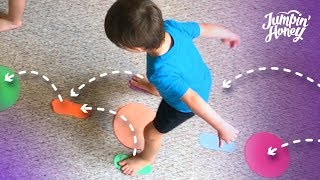

GYM RISAMOV
Inicio
Mision
Conoce Nuestra Mision
Vision
2025
2026
Quienes Somos
Propietario
Nuestra Historia
Articulos
Bailar una Alternativa
Conoce los Beneficios
"La danza es la poesía silenciosa del alma."